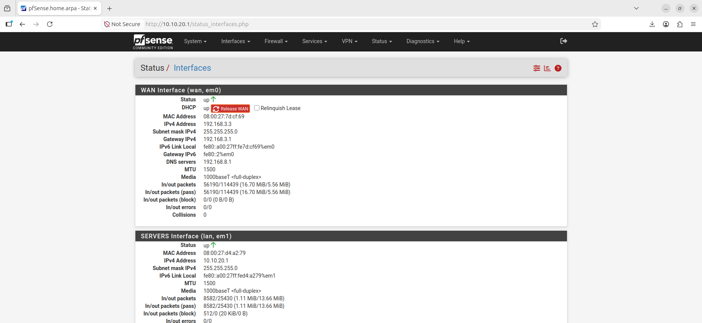
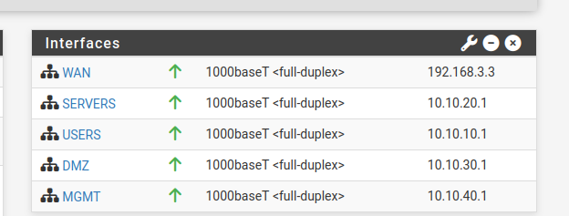
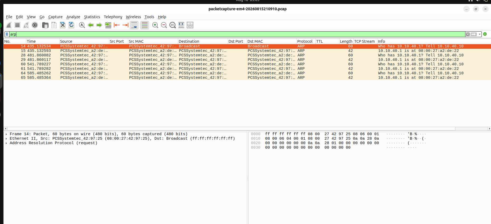
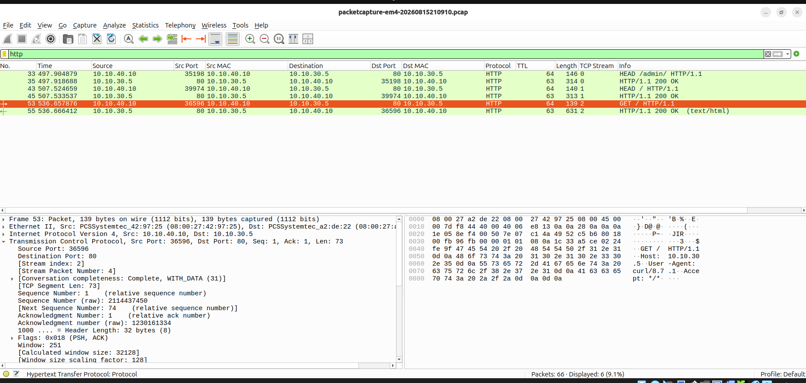
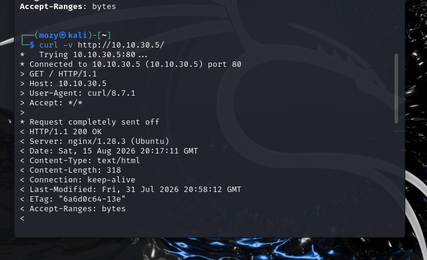
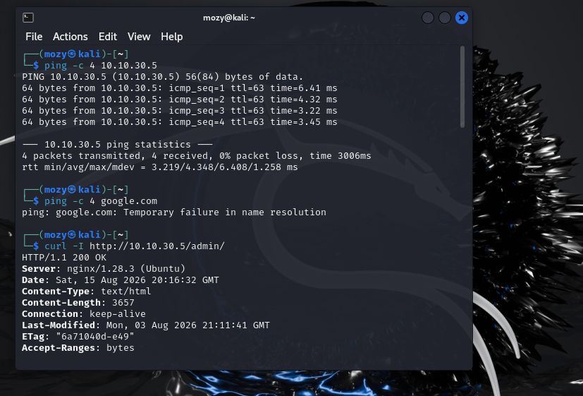
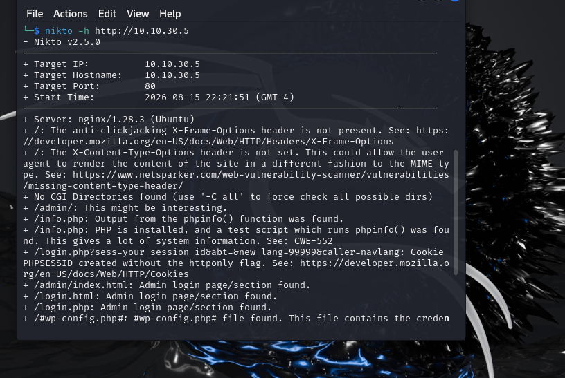

Network Visibility
Establish a repeatable baseline for observing Atlas Core network traffic before introducing additional security controls.
Objective
Establish a repeatable baseline for observing Atlas Core traffic before introducing new security controls.
Environment
- pfSense
- Atlas Core enterprise network
- Authorized Windows/Kali systems
- Wireshark
- AtlasBank application in the DMZ
Network Architecture
WAN 192.168.3.0/24
|
pfSense
|
┌──────────┼──────────┬──────────┐
| | | |
USERS SERVERS DMZ MGMT
10.10.10 10.10.20 10.10.30 10.10.40
|
AtlasBank
10.10.30.5
Exercises Completed
01 — pfSense Interface Validation
Validated the Atlas Core interfaces and confirmed the expected network addressing.
WAN 192.168.3.0/24 SERVERS 10.10.20.0/24 USERS 10.10.10.0/24 DMZ 10.10.30.0/24 MGMT 10.10.40.0/24
02 — ARP Traffic Analysis
Captured ARP traffic on the management interface using Wireshark and observed request/reply behavior and broadcast discovery traffic.
03 — HTTP Traffic Analysis
Captured HTTP communication between the management network and AtlasBank in the DMZ.
Source: 10.10.40.10 Destination: 10.10.30.5 Protocol: HTTP Destination: TCP/80
04 — AtlasBank Connectivity Validation
Validated connectivity to the AtlasBank web service from Kali using ICMP and HTTP requests.
05 — Administrative Endpoint Validation
Validated that the configured /admin/ endpoint was reachable over HTTP in the current lab configuration.
06 — Nikto Validation
Performed authorized web server validation against the AtlasBank DMZ host.
Key Findings
- Atlas Core pfSense interfaces were operational and matched the intended network segmentation.
- MGMT-to-DMZ communication was observable through Wireshark.
- ARP discovery traffic was successfully captured.
- AtlasBank was reachable from the management network over TCP/80.
- The current lab configuration uses HTTP intentionally for traffic-analysis training.
- HTTPS will be introduced as a subsequent hardening exercise.
Evidence







Engineering Outcome
ENG-001 established the baseline network visibility required for subsequent Atlas Core security engagements. The environment can now be used to observe traffic before and after introducing segmentation, IDS, IPS, WAF and SIEM controls.
Next Engagement
ENG-002 — VLAN Segmentation
Validate network isolation and controlled inter-zone traffic across the Atlas Core security zones.